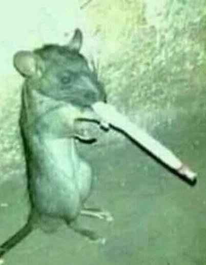
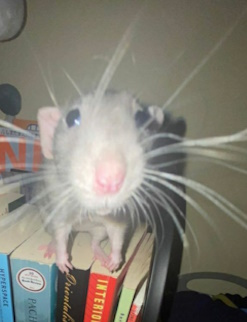
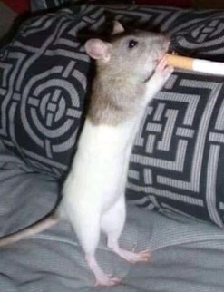
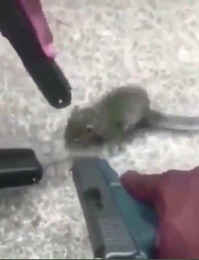
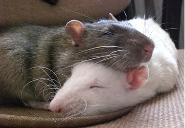
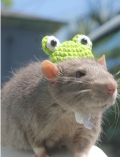
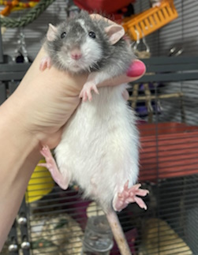

Roy Ensmoj
Father, Husband & Teacher
- 
- 
- 
- 
- 
My best friend Roy Ensmoj is amazing. It’s funny, but I don’t think I ever really realized it until I started thinking about how much he’s been there for me. Always showing up, always ready to listen, always with a cigarette in his paw and a story to tell. He’s the kind of rat you think will just always be around. You expect him to keep cracking jokes, giving fatherly advice, nagging me to get my act together, teaching kids with patience, and somehow making it all look easy. I used to take that for granted. I guess I thought Roy would just always be there, puffing smoke and reminding me that life’s not as bad as it seems.
Now I feel lucky every time he asks me how I’m doing (even when he already knows the answer). I feel lucky when he tells me I should be more responsible, or when I hear that familiar smoker’s cough that lets me know he’s still around. Roy is more than a teacher, more than a dad, more than a friend. He’s Roy Ensmoj. And somehow, that’s always enough.
- 
- 
My best friend Roy Ensmoj is missing, and honestly, the world feels way too quiet without him. Roy isn’t just any rat — he’s THE rat. Father, teacher, smoker, philosopher, part-time cheese sommelier, and full-time legend. He could turn anything into a life lesson. Like the time he told me “life’s like a half-smoked cigarette — messy, short, and better when shared.” Then he coughed for three minutes straight. Classic Roy.
Everyone in town knows him. At school he was “Mr. Ensmoj,” teaching kids about science and how not to set themselves on fire in lab. Out in the streets, though, he was Roy: the rat who could drink three espressos in a row and still fall asleep in your shoe. He wore the same scuffed loafers every day — not on his feet, of course, but dragged them behind him like a badge of honor. That’s just how he rolled.
The truth is: Roy’s been gone for a while now. Last confirmed sighting was behind the 7-Eleven, giving a TED Talk to a flock of pigeons about the melting point of cheese while chain-smoking. Someone else swears they saw him at the library correcting the Dewey Decimal System with a Sharpie. Nobody’s sure. All we know is he’s out there, somewhere, probably lecturing raccoons about taxes or sneaking into Olive Garden for the “unlimited breadsticks.”
We need your help. If you see a rat about yay big, coughing like a lawn mower, smelling faintly of Marlboros and wisdom, please let us know. He’s more than a friend. He’s Roy Ensmoj. And until he’s back, there’s an empty barstool, an untouched ashtray, and a whole lot of students failing chemistry without him.
What a wonderful rat-friend I have,
But he is in trouble.
He’s gone missing.
Last seen smoking and lecturing pigeons!
Please keep Roy in your thoughts,
and if you see him—probably coughing,
probably teaching, definitely smoking—
let him know we miss him.